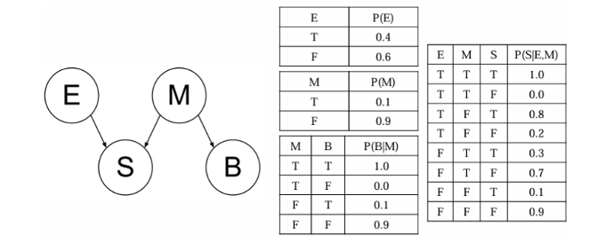

不确定性知识表示与推理
课程信息
- 授课对象：计算机科学与技术专业 二年级
- 课程名称：人工智能（专业必修）
- 节选内容：第四章 不确定性知识表示与推理
- 课程学分：3学分
一、为什么需要不确定性推理？
在传统的确定性知识表示与推理中（如谓词逻辑、归结推理），我们处理的是具有明确真值的事实和规则。例如，“姜维的主公是刘备”，“刘备的义弟是关羽”，“关羽的义弟是张飞”，可以推断出“姜维的主公的义弟是张飞”。
然而，现实世界充满了不确定性：
- 信息不完整：医疗诊断时，患者可能无法提供所有症状；传感器数据可能缺失。
- 随机性：金融市场波动受多种随机因素影响；基因表达受环境随机干扰。
- 模糊性：自然语言中的“很快”、“高个子”等表述因人而异；图像识别中物体边缘模糊。
大多数智能任务都涉及不确定性。在缺少足够信息的情况下做出判断，就需要不确定性推理。
那么，如何在不确定性下做出理性决策呢？在不确定性环境下，我们不能仅依赖已知事实，而必须“赌博”（做出不确定性下的决策）。理性决策通常意味着最大化期望效用 (Expected Utility)。
期望效用 = Σ (结果的概率 × 结果的效用)
例如，选择去机场的出发时间，需要权衡准时到达的效用和不同交通状况发生的概率。要做出理性行为，我们必须能够评估事件发生的可能性，即概率。
二、概率论基础回顾
概率论是处理不确定性的数学基础。本节将回顾其核心概念。
-
概率定义：
- 概率是定义在一组原子事件集 \(U\) (全集) 上的函数。
- 为每个事件 \(e \in U\) 指定一个值 \(Pr(e) \in [0,1]\)。
- 对事件集 \(F \subseteq U\)，\(Pr(F) = \sum_{e \in F} Pr(e)\)。
- 概率公理：
- \(Pr(U) = 1\)
- \(Pr(A) \in [0, 1]\)
- \(Pr(A \cup B) = Pr(A) + Pr(B) - Pr(A \cap B)\)
- 常用表示：\(A \lor B\) (A 或 B)，\(A \land B\) (A 与 B)，\(\neg A\) (非 A)。
-
事件与变量：
- 事件空间可由一组变量 \(V_1, V_2, \dots, V_n\) 及其对应的域 \(Dom[V_i]\) 定义。
- 原子事件是所有变量值向量的集合：\(\{(d_1, \dots, d_n) | d_i \in Dom[V_i]\}\)。
- 事件空间大小为 \(\prod_i |Dom[V_i]|\)。若每个变量有2个值，则有 \(2^n\) 个原子事件 (指数级)。
-
边际化 (Summing out / Marginalizing)：
- 计算某个变量取特定值的概率，需要对其他所有变量的所有可能取值求和。
- 例如：\(Pr(V_1 = a) = \sum_{x_2 \in Dom[V_2]} \dots \sum_{x_n \in Dom[V_n]} Pr(V_1=a, V_2=x_2, \dots, V_n=x_n)\)
-
条件概率 (Conditional Probability)：
- 给定事件 A 发生 (且 \(Pr(A) > 0\))，事件 B 发生的概率为： \(Pr(B|A) = \frac{Pr(B \cap A)}{Pr(A)}\)
- 全概率公式：若 \(B_1, \dots, B_k\) 构成 \(U\) 的一个划分 (互斥且周全)，则对任意事件 A： \(Pr(A) = \sum_{i=1}^k Pr(A \cap B_i) = \sum_{i=1}^k Pr(A|B_i)Pr(B_i)\)
-
独立性 (Independence)：
- 如果 \(Pr(B|A) = Pr(B)\)，则称 B 与 A 独立。
- 等价地，如果 \(Pr(A \cap B) = Pr(A) \cdot Pr(B)\)，则 A 与 B 独立。
- 独立性允许我们将 \(Pr(A \cap B)\) 的计算分解为 \(Pr(A)\) 和 \(Pr(B)\)。
-
条件独立性 (Conditional Independence)：
- 如果在给定 A 的条件下，B 与 C 条件独立，指的是在条件概率空间 \(Pr(\cdot|A)\) 中的独立性。
- 即 \(Pr(B|A \cap C) = Pr(B|A)\)。
- 这意味着一旦知道了 A，额外知道 C 对于判断 B 是否发生是无关的。
- 其重要推论是：\(Pr(B \cap C|A) = Pr(B|A) \cdot Pr(C|A)\)。
-
链式法则 (Chain Rule)：
- \(Pr(A_1 \cap A_2 \cap \dots \cap A_n) = Pr(A_1 | A_2 \cap \dots \cap A_n) \cdot Pr(A_2 | A_3 \cap \dots \cap A_n) \cdot \dots \cdot Pr(A_{n-1}|A_n) \cdot Pr(A_n)\)
-
贝叶斯法则 (Bayes' Rule)：
- \(Pr(Y|X) = \frac{Pr(X|Y)Pr(Y)}{Pr(X)}\)
- 它允许我们用 \(Pr(X|Y)\) (通常更易评估或从因果关系获得) 来计算 \(Pr(Y|X)\)。
关于概率分布的表示，需要注意：\(Pr(X)\) 指变量 \(X\) 的边际分布；\(Pr(X|Y)\) 指关于 \(X\) 的一系列条件分布，对 \(Y\) 的每个取值 \(y \in Dom(Y)\) 都有一个；\(Pr(X=d)\) 是一个数值，而 \(Pr(X)\) 是一个函数，接受 \(x \in Dom[X]\) 返回 \(Pr(X=x)\)。
三、贝叶斯推断
贝叶斯推断的含义
贝叶斯公式可以改写为：
\(Pr(A|B) = Pr(A) \cdot \frac{Pr(B|A)}{Pr(B)}\)
- \(Pr(A)\)：先验概率 (Prior probability)，在事件 B 发生前，对 A 事件概率的判断。
- \(Pr(A|B)\)：后验概率 (Posterior probability)，在事件 B 发生后，对 A 事件概率的重新评估。
- \(\frac{Pr(B|A)}{Pr(B)}\)：可能性函数 (Likelihood Ratio / Adjustment Factor)，调整因子。
- 若 > 1，先验概率被增强。
- 若 = 1，B 事件无助于判断 A 的可能性。
- 若 < 1，先验概率被削弱。
贝叶斯推断的核心思想是：先验概率 + 实验证据 → 后验概率。
例子1：疾病诊断 (流感案例)
已知某种疾病的发病率是 \(0.001\)。一种试剂检验的准确率是 \(0.99\) (真阳性率)，误报率是 \(0.05\) (假阳性率)。若一个病人检验结果为阳性，他确实得病的可能性有多大？
- 设 A = 得病，B = 检验结果为阳性。
- \(Pr(A) = 0.001\) (先验概率)
- \(Pr(B|A) = 0.99\) (准确率)
- \(Pr(B|\neg A) = 0.05\) (误报率)
- 我们要求 \(Pr(A|B)\) (后验概率)。
根据贝叶斯公式： \(Pr(A|B) = \frac{Pr(B|A)Pr(A)}{Pr(B)}\)
分母 \(Pr(B)\) 用全概率公式计算：
\(Pr(B) = Pr(B|A)Pr(A) + Pr(B|\neg A)Pr(\neg A)\)
\(Pr(B) = 0.99 \cdot 0.001 + 0.05 \cdot (1 - 0.001)\)
\(Pr(B) = 0.99 \cdot 0.001 + 0.05 \cdot 0.999\)
\(Pr(B) = 0.00099 + 0.04995 = 0.05094\)
所以， \(Pr(A|B) = \frac{0.99 \cdot 0.001}{0.05094} = \frac{0.00099}{0.05094} \approx 0.0194\)
即使检验结果为阳性，病人实际得病的概率也只有约 \(1.94\%\)。这是因为基础发病率很低，且存在误报。
例子2：糖果碗问题
两个碗，1号碗有30颗水果糖和10颗巧克力糖 (共40颗)，2号碗有水果糖和巧克力糖各20颗 (共40颗)。随机选一个碗，摸出一颗是水果糖。问这颗水果糖来自1号碗的概率？
- H1: 来自1号碗, H2: 来自2号碗。E: 摸出水果糖。
- 先验概率: \(P(H1) = 0.5\), \(P(H2) = 0.5\)。
- 条件概率 (似然):
- \(P(E|H1) = 30/40 = 0.75\)
- \(P(E|H2) = 20/40 = 0.5\)
- 求 \(P(H1|E)\)。
- \(P(E) = P(E|H1)P(H1) + P(E|H2)P(H2) = 0.75 \cdot 0.5 + 0.5 \cdot 0.5 = 0.375 + 0.25 = 0.625\)
- \(P(H1|E) = \frac{P(E|H1)P(H1)}{P(E)} = \frac{0.75 \cdot 0.5}{0.625} = \frac{0.375}{0.625} = 0.6\)
水果糖来自1号碗的概率是 \(60\%\)。
四、多因子下的贝叶斯推断 (朴素贝叶斯分类器)
当有多个证据（属性）时如何推断？给定一个样本，具有属性 \((A_1, A_2, \dots, A_n)\)，目标是预测其类别 \(C\)。我们希望找到使后验概率 \(P(C | A_1, A_2, \dots, A_n)\) 最大化的类别 \(C\)。
根据贝叶斯定理： \(P(C | A_1, \dots, A_n) = \frac{P(A_1, \dots, A_n | C) P(C)}{P(A_1, \dots, A_n)}\)
要最大化上式，只需最大化分子 \(P(A_1, \dots, A_n | C) P(C)\)，因为分母 \(P(A_1, \dots, A_n)\) 对所有类别 \(C\) 都是相同的。
核心难点：如何估计 \(P(A_1, \dots, A_n | C)\)？这个联合概率分布的参数空间非常大。
朴素贝叶斯假设 (Naive Bayes Assumption)
朴素贝叶斯分类器做了一个关键的（通常过于简化的）假设：给定类别 \(C\) 时，所有属性 \(A_i\) 之间条件独立。
\(P(A_1, A_2, \dots, A_n | C) = P(A_1|C) \cdot P(A_2|C) \cdot \dots \cdot P(A_n|C) = \prod_{i=1}^n P(A_i|C)\)
因此，最大化目标变为：
\(C_{NB} = \arg\max_C P(C) \prod_{i=1}^n P(A_i|C)\)
参数估计：
- \(P(C)\): 类别 \(C\) 的先验概率，可从训练数据中该类别的样本频率估计，\(N_c/N\)。
- \(P(A_i|C)\):
- 离散属性: \(P(A_i=v | C_k) = N_{ik}/N_k\)，即类别 \(C_k\) 的样本中属性 \(A_i\) 取值为 \(v\) 的频率。
- 连续属性:
- 离散化: 将连续值划分为区间，然后按离散属性处理。
-
概率密度估计: 假设属性服从某种分布（如正态分布），从数据中估计分布参数（如均值 \(\mu_{ik}\) 和标准差 \(\sigma_{ik}\)），然后用概率密度函数 \(f(A_i=v | C_k)\) 代替 \(P(A_i=v | C_k)\)。
例如，正态分布： \(P(A_i=v|C_k) = \frac{1}{\sqrt{2\pi}\sigma_{ik}} \exp\left(-\frac{(v-\mu_{ik})^2}{2\sigma_{ik}^2}\right)\)
零概率问题与平滑处理
如果某个属性值在训练集中某个类别下从未出现过，则 \(P(A_i=v|C_k)\) 会为0，导致整个乘积为0。
解决方法：平滑技术，如拉普拉斯平滑 (Laplace Smoothing)。
- \(P(A_i=v|C_k) = \frac{N_{ik} + 1}{N_k + m}\) 其中 \(m\)是属性 \(A_i\) 可能取值的数量。
- m-estimate: \(P(A_i=v|C_k) = \frac{N_{ik} + mp}{N_k + m}\) (p是先验概率, m是等效样本大小参数)
应用实例：垃圾邮件过滤
Paul Graham 提出的基于贝叶斯推断的垃圾邮件过滤方法：
- 预处理：准备正常邮件和垃圾邮件训练集。
- 特征提取：提取邮件中的词语。
- 频率计算：计算每个词语 \(W\) 在正常邮件(H)和垃圾邮件(S)中出现的频率，即 \(P(W|H)\) 和 \(P(W|S)\)。 （对未出现词语进行平滑，如赋予一个小的默认频率）。
- 先验概率：设定 \(P(S)\) 和 \(P(H)\) (如各50%，或根据实际邮件比例)。
- 新邮件分类：
- 对新邮件中的每个词 \(W_i\)，计算 \(P(S|W_i) = \frac{P(W_i|S)P(S)}{P(W_i|S)P(S) + P(W_i|H)P(H)}\)。
- 选取 \(N\) 个最具指示性的词语（如 \(P(S|W_i)\) 最高的15个词）。
- 计算这些词语的联合概率 (朴素贝叶斯假设下)： \(P(S | W_1, \dots, W_N) \propto P(S) \prod_{i=1}^N P(W_i|S)\) \(P(H | W_1, \dots, W_N) \propto P(H) \prod_{i=1}^N P(W_i|H)\) 比较两个值的大小（或计算归一化后的 \(P(S | W_1, \dots, W_N)\)）来判断是否为垃圾邮件。
朴素贝叶斯分类器的特点：
- 实现简单，计算效率高。
- 在很多实际问题中表现良好，即使独立性假设不完全成立。
- 对孤立的噪声点和不相关属性具有一定的鲁棒性。
朴素贝叶斯分类器的不足：
- 独立性假设：在现实中往往不成立（如邮件中某些词语倾向于一起出现）。
- 对先验概率敏感：先验概率 \(P(C)\) 的选择可能影响结果。
- 数据稀疏问题：零概率问题需要平滑处理。
五、贝叶斯学派与频率学派
统计学中存在两种主要的思想流派：
- 频率学派 (Frequentist Statistics)：认为概率是大量重复试验中事件发生的频率。他们基于样本信息进行推断，认为参数是固定但未知的。
- 贝叶斯学派 (Bayesian Statistics)：认为概率是认识主体对事件发生可能性大小的相信程度（主观概率）。他们结合样本信息和先验信息进行推断，认为参数是随机变量，有其自身的分布。
贝叶斯方法一度被忽视，直到计算机算力发展和抽样算法（如MCMC）的进步，才重新得到广泛应用。
贝叶斯方法的历史趣闻：
- 《联邦党人文集》作者公案：Mosteller 和 Wallace 使用贝叶斯方法分析词频，成功推断出存在争议的12篇文章的作者（主要是麦迪逊）。
- 天蝎号核潜艇搜救：John Craven 使用贝叶斯方法，结合多领域专家的主观猜测（先验）和搜索结果（证据）不断更新潜艇位置的概率分布图，最终成功定位。这种方法后来成为海难空难搜救的通行做法 (Bayesian Search Theory)。
六、从完全独立到条件独立
在朴素贝叶斯中，我们假设所有属性在给定类别时是条件独立的。这是一个很强的假设。如果变量之间确实存在依赖关系，我们需要一种更精细的方式来表示它们。
-
完全独立：假设布尔变量 \(X_1, \dots, X_n\) 彼此完全独立。
- 指定联合分布仅需 \(n\) 个参数 (如 \(Pr(X_i=\text{true})\))。
- 例如，\(Pr(X_1 \land \neg X_2 \land X_3) = Pr(X_1)(1-Pr(X_2))Pr(X_3)\)。
- 复杂度从 \(O(2^n)\) 降到 \(O(n)\)。
- 然而，完全独立在现实中很少见。
-
条件独立：幸运的是，大多数领域表现出相当程度的条件独立性。贝叶斯网络 (Bayesian Networks, BNs) 正是利用这种条件独立性来进行表示和推理。
一个故事：Craig 的倒霉一天
设想以下因果关系链：
- E: Craig 起床太早 (Craig woke up too early)
- C: Craig 需要咖啡 (Craig needs coffee)
- A: Craig 很生气 (Craig is angry)
- B: Craig 血管爆裂 (Craig burst a blood vessel)
- H: Craig 住院了 (Craig hospitalized)
依赖关系图示： E → C → A → B → H
条件独立性分析：
- \(H\) 是否独立于 \(E, C, A, B\)？否。知道这些信息会改变对 \(Pr(H)\) 的评估。
- 但如果已知 \(B\) 的取值 (真/假)，那么 \(E, C, A\) 的取值不会再影响 \(Pr(H)\)。
- 即 \(H\) 在给定 \(B\) 的条件下，独立于 \(E, C, A\)。
- \(Pr(H | B, A, C, E) = Pr(H|B)\)
- 类似地：
- \(Pr(B | A, C, E) = Pr(B|A)\) (B 在给定 A 时独立于 C, E)
- \(Pr(A | C, E) = Pr(A|C)\) (A 在给定 C 时独立于 E)
- \(Pr(C|E)\) 和 \(Pr(E)\) 无法进一步简化。
联合概率分解：
根据链式法则：
\(P(H,B,A,C,E) = P(H|B,A,C,E) P(B|A,C,E) P(A|C,E) P(C|E) P(E)\)
利用上述条件独立性假设：
\(P(H,B,A,C,E) = P(H|B) P(B|A) P(A|C) P(C|E) P(E)\)
参数数量：
假设每个变量都是布尔型。
- \(P(E)\): 1个参数 ( \(Pr(e)\) vs \(Pr(\neg e)\) )
- \(P(C|E)\): 2个参数 ( \(Pr(c|e), Pr(c|\neg e)\) )
- \(P(A|C)\): 2个参数
- \(P(B|A)\): 2个参数
- \(P(H|B)\): 2个参数
总共 \(1+2+2+2+2 = 9\) 个独立参数。
而显式表示完整的联合分布需要 \(2^5 - 1 = 31\) 个参数。
贝叶斯网络实现了参数数量的线性增长（对于链状结构）。
计算边际概率 (例如 \(P(a)\))：
使用 "summing out" 法则：
\(P(a) = \sum_{c_i \in Dom(C)} P(a|c_i)P(c_i)\)
而 \(P(c_i) = \sum_{e_j \in Dom(E)} P(c_i|e_j)P(e_j)\)
所以 \(P(a) = \sum_{c_i \in Dom(C)} P(a|c_i) \sum_{e_j \in Dom(E)} P(c_i|e_j)P(e_j)\)
这些项都来自我们指定的局部条件分布。
七、什么是贝叶斯网络 (Bayesian Network, BN)?
贝叶斯网络的定义
一个基于变量 \(\{X_1, X_2, \dots, X_n\}\) 的贝叶斯网络由以下两部分组成：
-
一个有向无环图 (Directed Acyclic Graph, DAG)：
- 图的节点 (nodes) 是这些变量 \(X_i\)。
- 图的边 (edges) 表示变量间的直接依赖关系。如果有一条从 \(X_j\) 到 \(X_i\) 的边，则 \(X_j\) 是 \(X_i\) 的一个父节点。
-
一组条件概率表 (Conditional Probability Tables, CPTs)：
- 对于每个变量 \(X_i\)，都有一个 CPT，量化了其父节点 \(Par(X_i)\) 对 \(X_i\) 的影响。
- CPT 指定了 \(Pr(X_i | Par(X_i))\)，即在给定其父节点各种取值组合的条件下，\(X_i\) 取不同值的概率。
关键概念：
- 父节点 (Parents) \(Par(X_i)\)：直接指向 \(X_i\) 的节点。
- 子节点 (Children)：\(X_i\) 直接指向的节点。
- 后代 (Descendants)：\(X_i\) 的子节点，子节点的子节点，以此类推。
- 祖先 (Ancestors)：\(X_i\) 的父节点，父节点的父节点，以此类推。
- 家族 (Family)：节点 \(X_i\) 及其父节点 \(Par(X_i)\) 的集合。
核心特性：
贝叶斯网络指定了网络中变量的联合分布可以分解为以下乘积形式：
\(Pr(X_1, X_2, \dots, X_n) = \prod_{i=1}^n Pr(X_i | Par(X_i))\)
这个分解极大地减少了表示联合分布所需的参数数量，尤其当网络稀疏（即每个节点的父节点不多）时。
例如，一个包含11个布尔变量的BN，若显式表示联合分布，需要 \(2^{11}-1 = 2047\) 个参数。若使用BN，假设每个CPT的条目数总和为27个参数，则大大减少了存储和计算需求。
八、构建贝叶斯网络
如何构建贝叶斯网络？
-
确定变量 (Step One: Add variables)： 识别问题中相关的随机变量。
-
确定网络结构 (Step Two: Add links)：
- 连接变量以表示直接依赖关系。通常，边的方向表示因果关系（原因 \(\rightarrow\) 结果），但这并非严格要求，只要满足条件独立性即可。
- 关键原则：对于节点 \(Y\)，若其父节点集为 \(\{X_1, \dots, X_k\} = Par(Y)\)，则意味着在给定 \(Par(Y)\) 的情况下，\(Y\) 与其所有非后代的变量条件独立。
- 网络必须是有向无环图 (DAG)。
-
确定条件概率表 (Step Three: Add CPTs)：
- 为每个节点 \(X_i\) 构建 CPT。
- CPT \(Pr(X_i | Par(X_i))\) 需要列出 \(X_i\) 的所有可能取值，对应其父节点 \(Par(X_i)\) 的每一种取值组合。
- 如果 \(X_i\) 有 \(k\) 个父节点，且每个变量（包括 \(X_i\) 及其父节点）有 \(d\) 个可能取值，则 \(X_i\) 的 CPT 大小约为 \(d^{k+1}\) (或 \(d \times d^k\) 个条目)。CPT 大小随父节点数量指数增长。
通用构造算法：
- 选择变量排序 \(X_1, X_2, \dots, X_n\)。
- 根据链式法则：\(Pr(X_1, \dots, X_n) = Pr(X_n|X_1, \dots, X_{n-1}) Pr(X_{n-1}|X_1, \dots, X_{n-2}) \dots Pr(X_1)\)。
- 对每个 \(X_i\)，考察其条件集 \(\{X_1, \dots, X_{i-1}\}\)。逐步移除那些使得 \(X_i\) 在给定其余变量的情况下条件独立的变量 \(X_j\)。 \(Pr(X_i | X_1, \dots, X_{i-1})\) 简化为 \(Pr(X_i | Par(X_i))\)，其中 \(Par(X_i) \subseteq \{X_1, \dots, X_{i-1}\}\) 是使得 \(X_i\) 与 \(\{X_1, \dots, X_{i-1}\} \setminus Par(X_i)\) 条件独立的最小变量集。
- 最终得到 \(Pr(X_1, \dots, X_n) = \prod_{i=1}^n Pr(X_i | Par(X_i))\)。
- 根据 \(Par(X_i)\) 构建DAG，并填充CPTs。
变量顺序的重要性
- 理论上，任何变量顺序都可以用来构造一个表示给定联合分布的贝叶斯网络。
- 然而，不同的变量顺序会导致不同结构和复杂度的贝叶斯网络。
- 不良的排序可能导致密集的网络（大量父节点），从而需要巨大的CPTs，推理复杂度也高。
- 经验法则：通常，基于因果关系的变量排序 (原因在前，结果在后) 会产生更自然、更紧凑的贝叶斯网络结构。
例子：疾病与症状 (变量排序影响)
变量：Malaria (M), Flu (F), Cold (C), Aches (A - 身体疼痛)。
M, F, C 都会导致 A。
因果排序: M, F, C, A
\(Pr(M,F,C,A) = Pr(A|M,F,C) Pr(C|M,F) Pr(F|M) Pr(M)\)
假设 M, F, C 相互独立 (患一种病不影响患其他病的概率)：
\(Pr(C|M,F) = Pr(C)\)
\(Pr(F|M) = Pr(F)\)
则 \(Pr(M,F,C,A) = Pr(A|M,F,C) Pr(C) Pr(F) Pr(M)\)
网络结构：M, F, C 三个独立的根节点都指向 A。只需要一个大的CPT \(Pr(A|M,F,C)\)。
反因果排序: A, C, F, M
\(Pr(A,C,F,M) = Pr(M|A,C,F) Pr(F|A,C) Pr(C|A) Pr(A)\)
- \(Pr(M|A,C,F)\) 无法简化。知道有 Aches，再知道是 Cold 和 Flu，会 "解释掉" Aches 的部分原因，从而降低 Malaria 的概率 (explaining away effect)。
- \(Pr(F|A,C)\) 无法简化。
- \(Pr(C|A) \neq Pr(C)\)。
这将导致一个更稠密的网络，参数更多，没有节省计算。
例子：家庭防盗警报系统 (Alarm Network)
变量：
- B: 入室盗窃 (Burglary) - boolean
- E: 地震 (Earthquake) - boolean
- A: 警报响 (Alarm) - boolean
- J: John 打电话 (JohnCalls) - boolean
- M: Mary 打电话 (MaryCalls) - boolean
因果知识 (用于构建网络结构)：
- 盗窃 (B) 可能触发警报 (A)。 (B → A)
- 地震 (E) 可能触发警报 (A)。 (E → A)
- 警报 (A) 可能导致 Mary 打电话 (M)。 (A → M)
- 警报 (A) 可能导致 John 打电话 (J)。 (A → J)
- B 和 E 相互独立 (通常情况下)。
网络结构：
B → A ← E
↓ ↓
J M
(更准确地是 A→J, A→M)
CPTs (示例值)：
- \(Pr(B=\text{true}) = 0.001\)
- \(Pr(E=\text{true}) = 0.002\)
-
\(Pr(A=\text{true} | B, E)\)
B E \(Pr(A=\text{true})\) true true 0.95 true false 0.94 false true 0.29 false false 0.001 -
\(Pr(J=\text{true} | A)\)
A \(Pr(J=\text{true})\) true 0.90 false 0.05 -
\(Pr(M=\text{true} | A)\)
A \(Pr(M=\text{true})\) true 0.70 false 0.01
参数数量： \(1 (B) + 1 (E) + 4 (A|B,E) + 2 (J|A) + 2 (M|A) = 10\) 个独立参数。
而 \(2^5 - 1 = 31\) 个参数（对于完全联合分布）。
联合概率：
\(Pr(B,E,A,J,M) = Pr(J|A) Pr(M|A) Pr(A|B,E) Pr(B) Pr(E)\)
如果选择非因果排序 (如 M, J, A, B, E)：
\(Pr(M,J,A,B,E) = Pr(E|B,A,J,M) Pr(B|A,J,M) Pr(A|J,M) Pr(J|M) Pr(M)\)
- \(Pr(J|M) \neq Pr(J)\) (如果Mary打电话，John也打电话的可能性增加，因为可能是同一个原因Alarm)
- \(Pr(A|J,M)\) 无法简化为 \(Pr(A|J)\) 或 \(Pr(A)\) (知道John和Mary都打电话，Alarm响的可能性大大增加)
- \(Pr(B|A,J,M)\) 可以简化为 \(Pr(B|A)\) (给定Alarm状态，John和Mary是否打电话不提供关于Burglary的额外信息)
- \(Pr(E|B,A,J,M)\) 可以简化为 \(Pr(E|A,B)\) (或更可能是 \(Pr(E|A)\)，因为一旦知道Alarm，Burglary会解释Alarm，降低E的可能)
这将导致一个更稠密的网络。
九、使用贝叶斯网络进行推理
那么，贝叶斯网络能做什么呢？给定一个贝叶斯网络（结构和CPTs）和一些证据 E (即某些变量的观测值)，我们希望计算某个（或某些）未观测变量 \(X_k\) 的后验概率分布 \(Pr(X_k | E)\)。
也就是说，我们想知道 \(Pr(X_k=d | E)\) 对所有 \(d \in Dom[X_k]\) 的值。
应用场景：
- 医疗诊断：根据症状（证据）计算不同疾病（查询变量）的概率。
- 故障诊断：根据观测到的系统行为推断故障原因。
- 天气预测：根据气象数据（证据）预测冰雹（查询变量）的概率。
例如，在警报网络中，我们可能想计算： \(Pr(B=\text{true} | M=\text{true}, J=\text{false}, E=\text{false})\) (Mary 打电话了，John 没打电话，没有地震，那么发生入室盗窃的概率是多少？)
贝叶斯网络中的推理算法（如变量消除、信念传播、MCMC采样等）用于执行这些计算，利用网络结构中的条件独立性来提高效率。这部分内容通常在后续课程中详细介绍o
课后作业
问题一
假设，空气中弥漫着硫磺(S)的气味既可能是鸡蛋(E)发臭所散发的，也可能是玛雅启示(M)所引发的厄运征兆，且玛雅启示还会导致海水沸腾(B)。对应的贝叶斯网络和部分条件概率分布如图所示。

(1) 计算联合概率分布 \(P(E=F, S=F, M=F, B=F)\);
(2) 海水沸腾的概率为多少？
(3) 假设海洋正在沸腾，那么玛雅启示发生的概率是多少？
(4) 假设空气中有硫磺的气味、海水正在沸腾、鸡蛋已经发臭，那么玛雅启示发生的概率是多少？
(5) 假设玛雅启示正在发生，那么鸡蛋发臭的概率是多少？
答案（仅供参考）
(1)
$ P(E=F, S = F, M = F, B = F) = P(S = F|E = F, M = F) P(B = F | M = F) P(E = F) P (M = F) = 0.6\cdot 0.9^3 = 0.4374 $
(2)
$ P(B = T) = \sum_{k\in {T, F}} P(B = T|M = k)P(M = k) = 1\cdot 0.1 + 0.1 \cdot 0.9 = 0.19 $
(3)
$ P(M = T | B = T) = \frac{P(M=T, B = T)}{P(B = T)} = \frac{1}{0.19} \approx 0.5263 $
(4)
$ P(M = T | S = T, B = T, E = T) = \frac{P(M = T, S = T, B = T, E = T)}{P(S = T, B = T, E = T)} $
分子： \(P(M=T, S=T, B=T, E=T) = P(E=T)P(M=T)P(S=T|E=T,M=T)P(B=T|M=T)\)
\(P(E=T) = 0.4\)
\(P(M=T) = 0.1\)
\(P(S=T|E=T,M=T) = 1.0\)
\(P(B=T|M=T) = 1.0\)
分子 \(= 0.4 \cdot 0.1 \cdot 1.0 \cdot 1.0 = 0.04\)
分母： \(P(S=T, B=T, E=T) = \sum_{m \in \{T,F\}} P(S=T, B=T, E=T, M=m)\)
\(P(S=T, B=T, E=T) = P(S=T, B=T, E=T, M=T) + P(S=T, B=T, E=T, M=F)\)
第一项 \(P(S=T, B=T, E=T, M=T)\) 就是我们刚计算的分子，即 \(0.04\)。
第二项 \(P(S=T, B=T, E=T, M=F) = P(E=T)P(M=F)P(S=T|E=T,M=F)P(B=T|M=F)\)
\(P(E=T) = 0.4\)
\(P(M=F) = 0.9\)
\(P(S=T|E=T,M=F) = 0.8\)
\(P(B=T|M=F) = 0.1\)
第二项 \(= 0.4 \cdot 0.9 \cdot 0.8 \cdot 0.1 = 0.36 \cdot 0.08 = 0.0288\)
分母 \(= 0.04 + 0.0288 = 0.0688\)
所以，\(P(M=T|S=T, B=T, E=T) = \frac{0.04}{0.0688} = \frac{400}{688} = \frac{100}{172} = \frac{25}{43} \approx 0.5814\)
(5)
\(P(E=T|M=T)\)
根据贝叶斯网络的结构，E 和 M 是独立的父节点（它们之间没有直接的边，也没有共同的父节点）。因此，一个变量的发生不影响另一个变量的先验概率。
所以，\(P(E=T|M=T) = P(E=T)\)
\(P(E=T) = 0.4\)